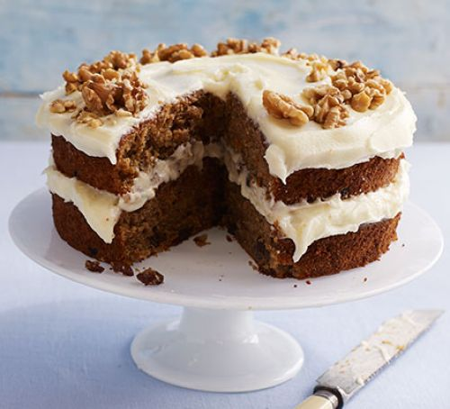

Butter Chicken

In a medium bowl, mix all the marinade ingredients with some seasoning. Chop the chicken into bite-sized pieces and toss with the marinade. Cover and chill in the fridge for 1 hr or overnight.
In a large, heavy saucepan, heat the oil. Add the onion, garlic, green chilli, ginger and some seasoning. Fry on a medium heat for 10 mins or until soft.
Add the spices with the tomato purée, cook for a further 2 mins until fragrant, then add the stock and marinated chicken. Cook for 15 mins, then add any remaining marinade left in the bowl. Simmer for 5 mins, then sprinkle with the toasted almonds. Serve with rice, naan bread, chutney, coriander and lime wedges, if you like.
Spaghetti

Boil the kettle. Put all the ingredients except the pecorino and basil in a wide saucepan or deep frying pan and season well. Pour over 800ml kettle-hot water and bring to a simmer, using your tongs to ease the spaghetti under the liquid as it starts to soften.
Simmer, uncovered, for 10-12 mins, tossing the spaghetti through the liquid every so often until it is cooked and the sauce is reduced and clinging to it. Add a splash more hot water if the sauce is too thick or does not cover the pasta while it cooks. Turn up the heat for the final few mins to drive off the excess liquid, leaving you with a rich sauce. Stir through the pecorino and basil, and serve with an extra drizzle of oil and pecorino on the side.
Pancake
Put 100g plain flour, 2 large eggs, 300ml milk, 1 tbsp sunflower or vegetable oil and a pinch of salt into a bowl or large jug, then whisk to a smooth batter.
Set aside for 30 mins to rest if you have time, or start cooking straight away.
Set a medium frying pan or crêpe pan over a medium heat and carefully wipe it with some oiled kitchen paper.
When hot, cook your pancakes for 1 min on each side until golden, keeping them warm in a low oven as you go.
Serve with lemon wedges and caster sugar, or your favourite filling. Once cold, you can layer the pancakes between baking parchment, then wrap in cling film and freeze for up to 2 months.
Carrot Cake
Heat oven to 180C/160C fan/gas 4. Oil and line the base and sides of two 20cm cake tins with baking parchment. Whisk the oil, yogurt, eggs, vanilla and zest in a jug. Mix the flour, sugar, cinnamon and nutmeg with a good pinch of salt in a bowl. Squeeze any lumps of sugar through your fingers, shaking the bowl a few times to bring the lumps to the surface.
Add the wet ingredients to the dry, along with the carrots, raisins and half the nuts, if using. Mix well to combine, then divide between the tins. Bake for 25-30 mins or until a skewer inserted into the centre of the cake comes out clean. If any wet mixture clings to the skewer, return to the oven for 5 mins, then check again. Leave to cool in the tins.
To make the icing, beat the butter and sugar together until smooth. Add half the cream cheese and beat again, then add the rest (adding it bit by bit prevents the icing from splitting). Remove the cakes from the tins and sandwich together with half the icing. Top with the remaining icing and scatter with the remaining walnuts. Will keep in the fridge for up to five days. Best eaten at room temperature.
Vegetable Chilli
Heat oven to 200C/180C fan/ gas 6. Cook the vegetables in a casserole dish for 15 mins. Tip in the beans and tomatoes, season, and cook for another 10-15 mins until piping hot. Heat the pouch in the microwave on High for 1 min and serve with the chilli.